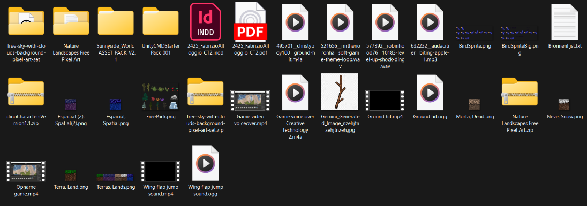

Arcade game
Tijdens mijn eerste jaar op CMD heb ik een Flappy Bird-achtige game gemaakt in Unity en een Arduino als joystick controller. Voor deze game moest ik een doel verzinnen voor mijn game in de vorm van een klein verhaaltje. Het verhaaltje dat ik heb bedacht is dat een vogel opzoek is naar eten laag aan de grond. Daarom is hiernaast te zien dat een vogel naar appels zoekt en de 'pipes' van grond moet ontwijken.
Om mijn verhaal over te laten komen op de speler heb ik assets moeten verzamelen van diverse bronnen. Hierbij heb ik gekeken naar wat het best zou werken bij de game en niet een te contrasterend kleurpalet had.


Dit zijn de assets die ik heb gebruikt in de game.